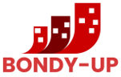
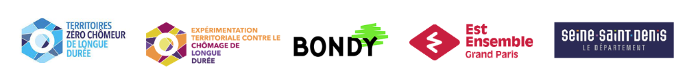

Notre mission
Portée par l’association Pour un Droit à l’Emploi à Bondy, Bondy-Up a pour mission de créer localement des emplois supplémentaires en CDI accessibles aux personnes durablement privées d’emploi.

Bondy-Up est l’Entreprise à But d’Emploi créée dans le cadre de l’expérimentation Territoires zéro chômeur de longue durée à Bondy.
Portée par l’association Pour un Droit à l’Emploi à Bondy, Bondy-Up a pour mission de créer localement des emplois supplémentaires en CDI accessibles aux personnes durablement privées d’emploi.
Bondy-Up développe des activités utiles répondant aux besoins non satisfaits du territoire, avec une action ancrée dans les quartiers de la Noue-Caillet et de Terre-Saint-Blaise.
Pour en savoir plus sur Territoires zéro chômeur de longue durée à Bondy : www.tz-bondy.com
Avec le soutien de nos partenaires
